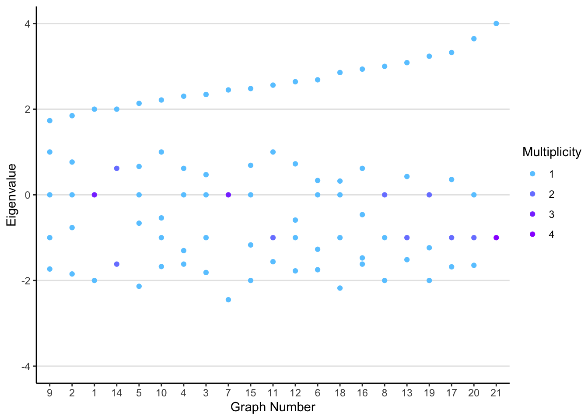
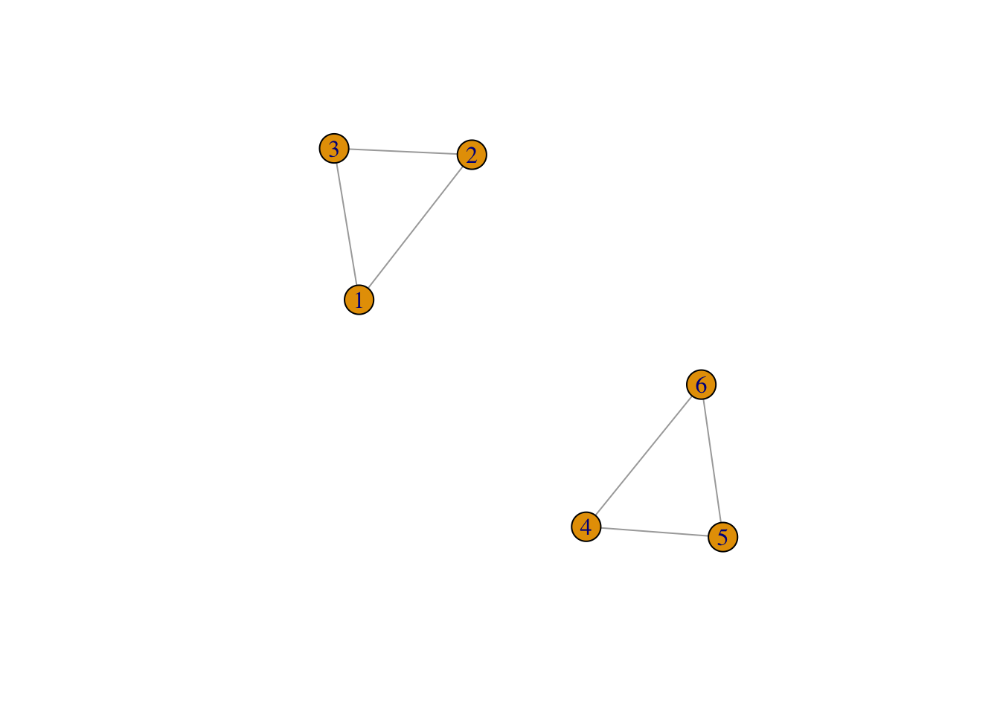

Code
library(igraph)
library(Matrix)
library(spam)
library(tidyverse)
library(purrr)
library(rgraph6)
library(fs)
library(forcats)
# devtools::install_github("lioumens/Lmisc") # private repo
library(Lmisc)library(igraph)
library(Matrix)
library(spam)
library(tidyverse)
library(purrr)
library(rgraph6)
library(fs)
library(forcats)
# devtools::install_github("lioumens/Lmisc") # private repo
library(Lmisc)Let j be the vector of all 1’s, and J be the matrix of all ones.
\begin{aligned} jj' &= J \\ j'x &= \sum x \\ j'A &= \operatorname{colsums}(A) \\ Aj &= \operatorname{rowsums}(A) \\ Jx &= \begin{bmatrix} \sum x \\ \vdots \\ \sum x \\ \end{bmatrix} \end{aligned}
hong_upper_adj_spectral <- function(d_min, n, m, easy = FALSE) {
if (easy) return(sqrt(1 + 2*m - n))
(d_min - 1 + sqrt((d_min + 1)^2 + 4 * (2 * m - n * d_min))) / 2
}g5_list <- read_file6("data/graph5c.g6", type = "igraph")
spectrum(g5_list[[5]], which = list(pos = "LM", howmany = 1))$values[1] 2.135779eigen(as_adj(g5_list[[2]]))$values[1][1] 1.847759g5_hong_df <- tibble(g = g5_list) |>
rownames_to_column("g_id") |>
rowwise() |>
mutate(min_deg = min(degree(g)),
n_edge = ecount(g),
n_vertex = vcount(g),
spectral_radius = eigen(as_adj(g))$values[1],
upper_spectral = hong_upper_adj_spectral(min_deg, n_vertex, n_edge),
easy_upper_spectral = hong_upper_adj_spectral(min_deg, n_vertex, n_edge, easy = TRUE)) |>
arrange(upper_spectral, easy_upper_spectral, spectral_radius)
g5_hong_df |> ggplot(aes(factor(g_id, unique(g_id)), spectral_radius)) +
geom_point(aes(color = "Spectral Radius")) +
geom_line(aes(y = upper_spectral, group = 1, color = "Hong Upper Bound", linetype = "Hong Upper Bound")) +
geom_line(aes(y = easy_upper_spectral, group = 1, color = "Hong Easy Upper Bound", linetype = "Hong Easy Upper Bound")) +
guides(colour = guide_legend(override.aes = list(shape = c(26, 26, 19), linetype = c(1, 2, 0)))) +
scale_color_manual("", values = c("red", "red", "black")) +
scale_shape(guide = "none") +
scale_linetype(guide = "none") +
labs(x = "graph",
y = "Adj. Spectral Radius",
title = "Hong Spectral Radius of Adjacency for all connected 5-graphs")
If there are 2 connected components, 2 of the eigenvalues will be 0.
g1 <- graph(~1-2-3-1-4-5-6-4)
L1 <- laplacian_matrix(g1)
plot(g1)eigen(L1)$values |> zapsmall()[1] 4.561553 3.000000 3.000000 3.000000 0.438447 0.000000g2 <- graph(~1-2-3-1, 4-5-6-4)
plot(g2)
L2 <- laplacian_matrix(g2)
eigen(L2)$values |> zapsmall()[1] 3 3 3 3 0 0g <- make_full_graph(5)
L <- laplacian_matrix(g)
plot(g)
eigen(L)$values |> zapsmall()[1] 5 5 5 5 0g <- make_star(5, mode = "undirected")
L <- laplacian_matrix(g)
plot(g)eigen(L)$values |> zapsmall()[1] 5 1 1 1 0g <- make_full_bipartite_graph(5, 3)
L <- laplacian_matrix(g, normalized = F)
plot(g)
eigen(L)$values |> zapsmall()[1] 8 5 5 3 3 3 3 0g <- make_graph(~1-2-3-4-5-6-7-8-9-10)
L <- laplacian_matrix(g, normalized = F)
plot(g)
eigen(L)$values |> zapsmall() [1] 3.902113 3.618034 3.175571 2.618034 2.000000 1.381966 0.824429 0.381966
[9] 0.097887 0.000000
There are 3 simple bounds on the Laplacian presented by (Anderson and Morley 1985),
\lambda_1(L) \leq n
\lambda_1(L) \leq 2d_{max}
\lambda_1(L) \leq \max_{i\sim j} w_i + w_j
If the eventual algorithm goal is to have the sum of the graph sitting on every node, the repeated application of a matrix multiplication should converge to the matrix of all ones J. The spectrum of J is simply n and the rest zeros. \frac{1}{n}J is special because it sets each node to have the mean, and the single non-zero eigenvalue is 1.
eigen(matrix(rep(1/4, 16), nrow = 4))$values |> zapsmall()[1] 1 0 0 0Suppose the initial state of the graph y is values at each of the n nodes of the graph.
\begin{aligned} n(I - \frac{1}{n}L)^ky \end{aligned}
As k increases, we’d expect that the matrix spectrum converges to match J, since L has a zero eigenvalue, one eigen value limit is 1. And since the Laplacian has spectral radius upper bounded by number of nodes,
set.seed(1)
g <- sample_gnp(10, .5)
A <- g %>% as_adj()
L <- Diagonal(x = rowSums(A)) - AJ <- Matrix(1, nrow = 10, ncol = 10)
J %*% cbind(1:10)10 x 1 Matrix of class "dgeMatrix"
[,1]
[1,] 55
[2,] 55
[3,] 55
[4,] 55
[5,] 55
[6,] 55
[7,] 55
[8,] 55
[9,] 55
[10,] 55Je <- eigen(J)
Ln <- laplacian_matrix(g, normalized = TRUE)
eigen(Ln)eigen() decomposition
$values
[1] 1.647271e+00 1.467555e+00 1.450327e+00 1.166667e+00 1.084726e+00
[6] 1.000000e+00 9.451136e-01 7.853920e-01 4.529494e-01 2.442491e-15
$vectors
[,1] [,2] [,3] [,4] [,5]
[1,] -0.16557306 -0.35884141 0.414024644 4.378811e-16 -0.41543869
[2,] 0.01245928 0.32716246 -0.261033301 7.071068e-01 -0.26421090
[3,] 0.07815309 0.07003764 0.522362456 -2.958733e-16 0.30735544
[4,] 0.49476837 -0.29623231 -0.126497326 3.013764e-16 -0.34924549
[5,] -0.26126348 -0.45016699 -0.226430018 3.655149e-16 -0.17830741
[6,] 0.01453893 -0.34738481 -0.412927706 -6.383782e-16 0.64394097
[7,] 0.29116939 -0.06983555 0.410643861 -1.133005e-16 0.11871973
[8,] 0.39734608 0.39945650 -0.007375584 -5.551115e-17 0.08547476
[9,] 0.01245928 0.32716246 -0.261033301 -7.071068e-01 -0.26421090
[10,] -0.64049820 0.27700977 0.113930213 -2.030681e-18 0.05918033
[,6] [,7] [,8] [,9] [,10]
[1,] -3.131423e-15 0.23529056 0.5901861 0.09578594 -0.2948839
[2,] -3.906316e-15 0.22258023 -0.1102821 0.25044926 -0.3611576
[3,] -6.324555e-01 -0.02451212 -0.2642891 0.25347743 -0.2948839
[4,] -3.162278e-01 0.13949439 -0.2339562 -0.57753213 -0.1474420
[5,] 6.578071e-15 -0.66595972 -0.2431392 0.18631243 -0.3296902
[6,] -1.421198e-15 0.30002682 0.2257963 -0.02773400 -0.3900947
[7,] 7.071068e-01 0.04045948 -0.3410158 -0.03156311 -0.3296902
[8,] 6.679915e-15 -0.53861397 0.5160385 -0.17841799 -0.2948839
[9,] -2.959103e-15 0.22258023 -0.1102821 0.25044926 -0.3611576
[10,] -1.665335e-16 0.01531268 -0.1004178 -0.63187856 -0.2948839# not correct
# M <- diag(10) - L / (diag(L) + 1) # direct averaging of over all nodes ***
# M <- diag(L) - L/2 # average across edges?
# correct
M <- diag(10) - L / 10
mat_pow <- function(M, t = 10) {
if (t == 1) {return(M)}
return(M %*% mat_pow(M, t - 1))
}
# mat_pow(M, 100)
y <- cbind(1:10)
for (i in 1:100) {
y <- M %*% y
}
y10 x 1 Matrix of class "dgeMatrix"
[,1]
[1,] 5.499981
[2,] 5.499980
[3,] 5.499978
[4,] 5.500109
[5,] 5.499981
[6,] 5.499988
[7,] 5.499989
[8,] 5.499992
[9,] 5.499980
[10,] 5.500024The primary reason for looking at the normalized laplacian is because it removes dependence on the number of nodes in the graph, which would change bounds. Rather, the eigenvalues of a normalized laplacian will range from 0 \leq 2, reaching 2 for bipartite graphs.
D <- 1 / sqrt(diag(L))
NL <- Diagonal(x = D) %*% L %*% Diagonal(x = D)
NL10 x 10 sparse Matrix of class "dgCMatrix"
[1,] 1.0000000 -0.2041241 . . . -0.1889822 .
[2,] -0.2041241 1.0000000 -0.2041241 . -0.1825742 -0.1543033 -0.1825742
[3,] . -0.2041241 1.0000000 . -0.2236068 -0.1889822 .
[4,] . . . 1.0 . . .
[5,] . -0.1825742 -0.2236068 . 1.0000000 . -0.2000000
[6,] -0.1889822 -0.1543033 -0.1889822 . . 1.0000000 -0.1690309
[7,] . -0.1825742 . . -0.2000000 -0.1690309 1.0000000
[8,] -0.2500000 . . . -0.2236068 -0.1889822 .
[9,] -0.2041241 -0.1666667 -0.2041241 . -0.1825742 -0.1543033 -0.1825742
[10,] . . . -0.5 . -0.1889822 -0.2236068
[1,] -0.2500000 -0.2041241 .
[2,] . -0.1666667 .
[3,] . -0.2041241 .
[4,] . . -0.5000000
[5,] -0.2236068 -0.1825742 .
[6,] -0.1889822 -0.1543033 -0.1889822
[7,] . -0.1825742 -0.2236068
[8,] 1.0000000 . -0.2500000
[9,] . 1.0000000 .
[10,] -0.2500000 . 1.0000000g <- make_ring(5)
plot(g)
N <- laplacian_matrix(g, normalized = TRUE)
# 1 - cos(2 * pi * 0:4 / 5) |> sort() # exact
eigen(N)$values |> zapsmall()[1] 1.809017 1.809017 0.690983 0.690983 0.000000g <- graph(~1-2-3-4-5)
N <- laplacian_matrix(g, normalized = TRUE)
# 1 - cos(pi * 0:4 / 4) |> sort() # exact
eigen(N)$values |> zapsmall()[1] 2.0000000 1.7071068 1.0000000 0.2928932 0.0000000g <- make_full_graph(5)
N <- laplacian_matrix(g, normalized = TRUE)
eigen(N)$values |> zapsmall() # n / n-1[1] 1.25 1.25 1.25 1.25 0.00g <- make_full_bipartite_graph(6, 4)
N <- laplacian_matrix(g, normalized = TRUE)
eigen(N)$values |> zapsmall() # 0, 1 (n + m - 2), 2 [1] 2 1 1 1 1 1 1 1 1 0Fiedler Eigenvalue is the smallest non-zero eigenvalue.
For k-regular graph, and diameter > 4, we have
\begin{aligned} \limsup \lambda_{n-1} \leq 1 - 2\frac{\sqrt{k-1}}{k} \end{aligned}
Rather, a more general (and useful upper bound):
Note that the original reference (Nilli 1991) , studies this problem for non-standardized Laplacian.
upper_fiedler_nilli <- function(k, D) {
if (D < 4) abort("upper bound only valid when diameter greater than 4")
return(1 - 2 * sqrt(k -1) / k * (1 - 2 / D) + 2 / D)
}Let’s generate all permutations of connected 8 graphs, and pick out those with diameter greater than 4. All graph generation is done with the program geng and filtered with pickg (McKay and Piperno 2013).
g8_dia4plus_list <- read_file6("data/graph8cdia4p.g6", type = "igraph")
g8_dia4plus_df <- tibble(g = g8_dia4plus_list) |>
rownames_to_column("g_id") |>
rowwise() |>
mutate(fiedler = net_fiedler(g, normalize = T),
k = max(degree(g)),
D = diameter(g),
upper_fiedler = upper_fiedler_nilli(k, D)) |>
arrange(desc(upper_fiedler), desc(fiedler))
g8_dia4plus_df |>
ggplot(aes(x = factor(g_id, levels = unique(g_id)),
y = fiedler, color = "Fiedler Value")) +
geom_point(size = .5, alpha = .7) +
geom_line(aes(y = upper_fiedler, group = upper_fiedler, color = "Upper Bound")) +
labs(color = "Color",
title = "Nilli Bound on Fiedler Value for connected-8 Graphs",
x = "Unique Graph Combinations",
y = "Fiedler Value") +
scale_color_manual(values = c("black", "red")) +
scale_x_discrete(breaks = NULL, labels = NULL) +
theme_minimal()
# files with regular, diameter larger than 4
# These are all 4 regular graphs, connected, 13/14 nodes, d
reg4_dia4plus_files <- c("data/reg4c13dia4.g6", "data/reg4c13dia5.g6", "data/reg4c14dia4.g6", "data/reg4c14dia5.g6")
reg4_dia4plus_list <- reg4_dia4plus_files |>
map(read_file6, type = "igraph")
reg4_dia4plus_df <- tibble(g = reg4_dia4plus_list, path = reg4_dia4plus_files) |>
unnest_longer(g, indices_include = TRUE, indices_to = "graph_id") |>
rowwise() |>
mutate(match = list(str_match(path, "data/reg4c(\\d*)dia(\\d*)")),
nodes = match[2],
dia = match[3],
k = 4,
fiedler = net_fiedler(g, normalized = T),
upper_fiedler = 1 - 2*sqrt(4-1) / 4) |>
select(-c(match, path)) |> arrange(desc(dia), nodes)
reg4_dia4plus_df <- reg4_dia4plus_df |> mutate(dia = as.numeric(dia),
islower = upper_fiedler > fiedler,
other_upper = 1 - 2 * sqrt(4 - 1)/4 * (1 - 2 / dia) + 2/dia,
other_islower = other_upper > fiedler) |>
arrange(islower, other_islower, desc(dia))
# among regular graphs, 13-14 nodes, 4+ diameter
reg4_dia4plus_df# A tibble: 4,271 × 10
# Rowwise:
g graph_id nodes dia k fiedler upper_f…¹ islower other…² other…³
<list> <int> <chr> <dbl> <dbl> <dbl> <dbl> <lgl> <dbl> <lgl>
1 <igraph> 1 13 4 4 0.203 0.134 FALSE 1.07 TRUE
2 <igraph> 2 13 4 4 0.250 0.134 FALSE 1.07 TRUE
3 <igraph> 3 13 4 4 0.207 0.134 FALSE 1.07 TRUE
4 <igraph> 4 13 4 4 0.205 0.134 FALSE 1.07 TRUE
5 <igraph> 5 13 4 4 0.204 0.134 FALSE 1.07 TRUE
6 <igraph> 6 13 4 4 0.257 0.134 FALSE 1.07 TRUE
7 <igraph> 7 13 4 4 0.255 0.134 FALSE 1.07 TRUE
8 <igraph> 8 13 4 4 0.257 0.134 FALSE 1.07 TRUE
9 <igraph> 9 13 4 4 0.188 0.134 FALSE 1.07 TRUE
10 <igraph> 10 13 4 4 0.192 0.134 FALSE 1.07 TRUE
# … with 4,261 more rows, and abbreviated variable names ¹upper_fiedler,
# ²other_upper, ³other_islower
# ℹ Use `print(n = ...)` to see more rowsreg4_dia4plus_df |> unite(col = "g_uid", !!!c("nodes", "dia", "graph_id"), remove = FALSE) |>
ggplot(aes(fct_reorder2(g_uid, fiedler, dia, .desc = T), fiedler)) +
geom_point() +
geom_point(aes(y = upper_fiedler), color = "red") +
geom_point(aes(y = other_upper), color = "red")# reg4_dia4plus_df
# reg4_dia4plus_df # well... they are all lower bounded? if it's an infinite family of regular graphs... it should get closer right? b/c it's lim sup?A loose lower bound for the smallest non-trivial eigenvalue (Chung 1997, 7):
\begin{aligned} \lambda_{n-1} \geq \frac{1}{D\operatorname{vol}(G)} \end{aligned} where D is the diameter of the graph, and volume of the graph is the sum of degrees for each node.
Let’s find the Fiedler value of every graph of size 5 and graph them against the bound,
g5_list <- read_file6("data/graph5c.g6", type = "igraph")
# fiedler values
fiedler5 <- lapply(g5_list, function(g) {
vol <- sum(degree(g)) # conservative
# vol <- vcount(g)
M <- laplacian_matrix(g, normalized = TRUE)
dia <- diameter(g, directed = FALSE)
list(g = list(g),
fiedler = eigen(M)$values[4],
vol = vol,
dia = dia)
})
graph_fiedler <- tibble(gg = fiedler5) |> unnest_wider(gg) |> unnest(cols = c(g)) |>
mutate(bound = 1/ (dia * vol),
diff = fiedler - bound) |>
arrange(diff)
# calculate the lower bound.
fiedler_bound_line <- tibble(dia = rep(list(seq(1, 4, .1)), 3), vol = c(5, 10, 20)) |> rowwise() |>
mutate(bound = list(1 / vol / dia)) |>
unnest_longer(col = c(dia, bound))
# The bound is generally quite bad for graphs
graph_fiedler |> ggplot(aes(dia, fiedler, color = vol)) +
geom_line(data = fiedler_bound_line, mapping = aes(dia, bound, color = vol, group = vol)) +
geom_point() +
labs(title = "Simple Fiedler Bound")
Even using the vertex count definition for volume (less conservative), the bound is quite low for most of the Fiedler values.
Cheeger’s constant is loosely defined in english, as the minimal ratio, of cost of cutting edges, to the size of sets it cuts off. That is, a “dumbbell” shape graph, where large vertex sets are on both side, and only cutting 1 edge in the middle would have a very very low cheeger constant.
\begin{aligned} h_G &= \min_S \frac{|\delta S|}{\min \{|S|,|\bar S| \}} \\&= \frac{\text{cutting edges cost}}{\text{vertex set volume}} \end{aligned}
Calculating Cheeger’s constant is an NP-Hard problem, meaning that the problem is likely non-polynomial for solution and checking.
The bounds on Fiedler’s value, with cheegers constants have the form,
\begin{aligned} \frac{h_G^2}{2d_{max}} \leq \lambda_{n-1} \leq 2h_G \end{aligned}
# graph_boundary_edges <- function(g, vs) {
# if(!inherits(g, "igraph")) {
# abort("`g` must be of class `igraph`")
# }
# inc_edges <- igraph::incident_edges(g, vs)
# purrr::reduce()
# }
# graph_interior_edges <- function(g, vs) {
# if(!inherits(g, "igraph")) {
# abort("`g` must be of class `igraph`")
# }
# inc_edges <- igraph:incident_edges(g, vs)
# }
# forget the functions... just do on matrices#TODO: implemented assuming undirected graph, generalize?
cheeger <- function(A, S) {
# calculate vertex boundary by taking neighbors minus initial set
adj_vec_set <- A[S,, drop = F] |> colSums()
ego1 <- which(adj_vec_set > 0)
dS <- setdiff(ego1, S) # vertex boundary
# calculate edge boundary by subsetting matrix from S to !S
bridge_matrix <- A[S, dS, drop = F]
bridge_edges <- bridge_matrix |>
as("lgCMatrix") |> # also assumes unweighted here when converting to logical
which(arr.ind = T)
bridge_edges[,"row"] <- S[bridge_edges[,"row"]] # convert indices
bridge_edges[,"col"] <- dS[bridge_edges[,"col"]]
vol_dS <- sum(bridge_matrix)
min_vol_S <- min(length(S), nrow(A) - length(S)) # use length as volume metric
return(vol_dS / min_vol_S)
}
# generate subsets for each graph
all_comb <- mapply(function(x) combn(5, x, simplify = F), 1:5)
all_comb_df <- tibble(elem = all_comb) |>
unnest_longer(elem)
graph_df <- g5_list |> lapply(as_adj) |>
tibble(A = _) |> rownames_to_column(var = "id") |>
mutate(id = as.numeric(id))
cheeger_df <- full_join(graph_df, all_comb_df, by = character()) |> rowwise() |>
mutate(cheeger_values = cheeger(A, elem))
cheeger_constant_df <- cheeger_df |> filter(cheeger_values > 0) |> group_by(id) |> arrange(id, cheeger_values) |> slice(1) |> ungroup()
# cheeger_constant_df |> slice(2) |> unlist()
fiedler_value_df <- tibble(gg = fiedler5) |> unnest_wider(gg) |> unnest(cols = c(g)) |>
rownames_to_column(var = "id") |>
rowwise() |>
mutate(id = as.numeric(id),
max_deg = max(degree(g))) |>
select(id, fiedler, dia, vol, max_deg) |>
ungroup()
cheeger_fiedler_df <- cheeger_constant_df |> select(id, elem, cheeger_values) |> left_join(fiedler_value_df, by = "id") |>
mutate(upper_cheeger = cheeger_values * 2,
lower_cheeger = cheeger_values^2 / 2/ max_deg) # dividing by max deg
# cheeger_fiedler_df |> mutate(inbound = fiedler > lower_cheeger & fiedler < upper_cheeger)
cheeger_fiedler_df |>
ggplot() +
geom_point(aes(id, lower_cheeger), color = "red") +
geom_point(aes(id, fiedler, color = vol)) +
geom_point(aes(id, upper_cheeger), color = "red") +
labs(y = "Eigenvalue",
x = "Graph ID",
title = "")# many variations of cheeger's unfortunately
# seems incorrect forIf we define an incidence matrix as a |V| \times |E| matrix, in which each column has a 1 and -1 for in positions the edge connects the vertices,
# ve_incidence <- function(g) {
# stopifnot(class(g) == "igraph")
# g %>% get.adjedgelist() %>% map_dbl(~-onehot(.x, n = ecount(g)))
# }
onehot <- function(x, n = max(x)) {
y <- vector(mode = "numeric",length = n)
y[x] <- 1
return(y)
}
# edge list
ve_incidence_matrix <- function(g) {
stopifnot(class(g) == "igraph")
onehot_edge <- function(x, n = max(x)) {
y <- vector(mode = "numeric",length = n)
y[x * sign(x)] <- sign(x)
return(y)
}
g_el <- get.edgelist(g)
g_el[,2] <- -g_el[,2]
g_el %>% apply(1, onehot_edge, n = vcount(g))
}
set.seed(1)
g <- sample_gnp(10, .5)
A <- g %>% as_adj()
L <- Diagonal(x = rowSums(A)) - A
B <- ve_incidence_matrix(g) # incidence matrixOur incidence matrix B looks like
B = \begin{bmatrix} 1 &0 &0 &0 &1 &0 &0 &0 &0 &0 &1 &0 &0 &1 &0 &0 &0 &0 &0 &0 &0 &0 &0 \\-1 &1 &1 &0 &0 &1 &0 &1 &0 &0 &0 &0 &0 &0 &1 &0 &0 &0 &0 &0 &0 &0 &0 \\0 &-1 &0 &1 &0 &0 &1 &0 &0 &0 &0 &0 &0 &0 &0 &1 &0 &0 &0 &0 &0 &0 &0 \\0 &0 &0 &0 &0 &0 &0 &0 &0 &0 &0 &0 &0 &0 &0 &0 &0 &0 &0 &1 &0 &0 &0 \\0 &0 &-1 &-1 &0 &0 &0 &0 &1 &0 &0 &1 &0 &0 &0 &0 &1 &0 &0 &0 &0 &0 &0 \\0 &0 &0 &0 &-1 &-1 &-1 &0 &0 &1 &0 &0 &1 &0 &0 &0 &0 &1 &0 &0 &1 &0 &0 \\0 &0 &0 &0 &0 &0 &0 &-1 &-1 &-1 &0 &0 &0 &0 &0 &0 &0 &0 &1 &0 &0 &1 &0 \\0 &0 &0 &0 &0 &0 &0 &0 &0 &0 &-1 &-1 &-1 &0 &0 &0 &0 &0 &0 &0 &0 &0 &1 \\0 &0 &0 &0 &0 &0 &0 &0 &0 &0 &0 &0 &0 &-1 &-1 &-1 &-1 &-1 &-1 &0 &0 &0 &0 \\0 &0 &0 &0 &0 &0 &0 &0 &0 &0 &0 &0 &0 &0 &0 &0 &0 &0 &0 &-1 &-1 &-1 &-1 \\ \end{bmatrix}
L= \begin{bmatrix} 4 &-1 &0 &0 &0 &-1 &0 &-1 &-1 &0 \\-1 &6 &-1 &0 &-1 &-1 &-1 &0 &-1 &0 \\0 &-1 &4 &0 &-1 &-1 &0 &0 &-1 &0 \\0 &0 &0 &1 &0 &0 &0 &0 &0 &-1 \\0 &-1 &-1 &0 &5 &0 &-1 &-1 &-1 &0 \\-1 &-1 &-1 &0 &0 &7 &-1 &-1 &-1 &-1 \\0 &-1 &0 &0 &-1 &-1 &5 &0 &-1 &-1 \\-1 &0 &0 &0 &-1 &-1 &0 &4 &0 &-1 \\-1 &-1 &-1 &0 &-1 &-1 &-1 &0 &6 &0 \\0 &0 &0 &-1 &0 &-1 &-1 &-1 &0 &4 \\ \end{bmatrix}
Just to see the sparsity pattern of B, (we try spam’s display routine)
I - D^{\dagger}A
matrices in which each matrix row sums to 1.
This section aims to quantify and give intuition behind the following matrix norms.